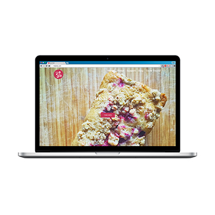
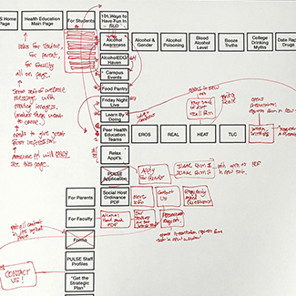
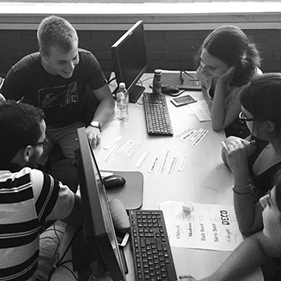

Teaching Graphic Design in Montenegro
During the summer of 2015, I had the privilege to teach graphic design at a university in Podgorica, Montenegro to a class of 15 students. Each class was interactive and included both a lecture and practical workshop. Homework included going into the community to gain inspiration, sketching, and completing projects using Adobe software.
Skills taught included color theory, photographic composition, visual hierarchy, page layout, typography, and Adobe Photoshop & InDesign. Class projects included photomontage, logo and business card design, poster design, and brochure design.
The class culminated into a student-led final design exhibition, which was well-attended by the community.
- Summer 2015
- 22.5mm
- ƒ/5.6
- 1/1000
- 80


![ treatSLO. Site for a newly established bakery. Created as a WordPress site to ease site management by business owner. Many special features utilize the power of the platform: MailChimp integration allows users to subscribe, which autofills into owner’s existing mail list. Facebook widget lets users “like” the bakery without leaving the site. Backend of form on “Order Treats!” organizes orders in accessible format and gives owner the option to export as a CSV file, which makes for simple record keeping. Blog posts redirected to secondary page, allowing home page to be static and, well, tasty. Winter 2015 Wordpress](images/grid-images/dev_treatSLO_square.jpg){kind=link}
![ Cal Poly Health Education Re-developed of website for Cal Poly Health Education. The old site was in disarray and was not strategically organized, so my redesign started from the ground up. First I wrote the structural hierarchy on sticky notes and then re-arranged them in the most logical order, considering many user cases. I then inputted this information digitally and further refined the structure. Third, I created mockups which I presented to my supervisor during meetings. The website was created using Cal Poly’s Drupal system. Spring 2015 22.5mm ƒ/5.6 1/1000 80](images/grid-images/dev_pulse_square.jpg){kind=link}
{kind=link}
![ Teaching Graphic Design in Montenegro During the summer of 2015, I had the privilege to teach graphic design at a university in Podgorica, Montenegro to a class of 15 students. Each class was interactive and included both a lecture and practical workshop. Homework included going into the community to gain inspiration, sketching, and completing projects using Adobe software. Skills taught included color theory, photographic composition, visual hierarchy, page layout, typography, and Adobe Photoshop & InDesign. Class projects included photomontage, logo and business card design, poster design, and brochure design. The class culminated into a student-led final design exhibition, which was well-attended by the community. Summer 2015 22.5mm ƒ/5.6 1/1000 80](images/grid-images/design_teaching_grid.jpg){kind=link}
{kind=link}
{kind=link}